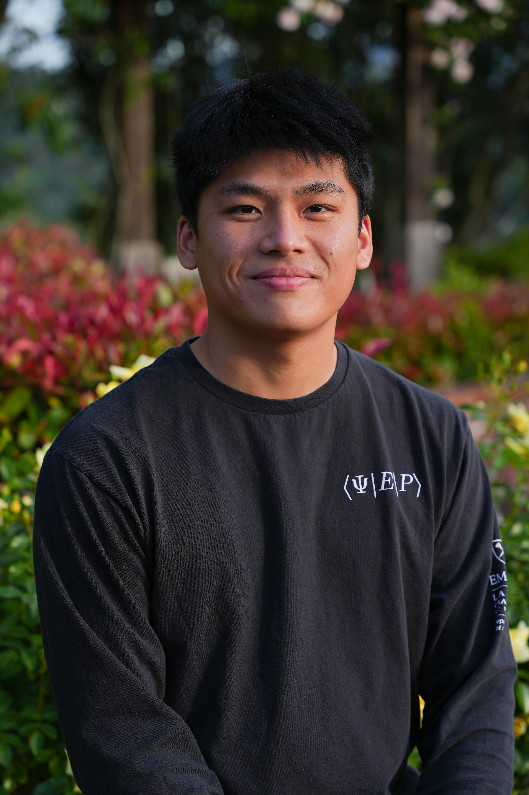

PUB.01
[Under review]Academic Portfolio
[Your Name]
PhD Candidate, Physics — University of Illinois Urbana-Champaign
[ONE OR TWO SENTENCES on your research area and what question drives your work. Keep it plain and specific.]

01 — About
[Short header about you]
[PARAGRAPH ONE. Your background, advisor, lab, and how you got into this field.]
[PARAGRAPH TWO, optional. Broader motivation for your research, or what you're working on right now.]
[Method / Tool One]
[Method / Tool Two]
[Method / Tool Three]
[Language / Software]
Education
[YEAR]–
Present
Present
PhD, [Field][University] · Advisor: [Name]
[YEAR]
MSc/MA, [Field][University]
[YEAR]
BSc/BA, [Field][University]
02 — Research interests
[Write your research statement here — 2 to 4 sentences on the central question you work on, why it matters, and the approach you take. This is meant to be a genuine, readable paragraph, not a list — write it the way you'd describe your work to a curious colleague outside your subfield.]
[Optional second paragraph — current project, or where you see this research heading next.]
[Keyword one]
[Keyword two]
[Keyword three]
[Keyword four]
Publications
03 — Papers
Talks & presentations
04 — Talks
TALK.01
TALK.02
[Talk Title Goes Here]
[Conference / Workshop Name] · [City] · [Month Year]
[One sentence on what the talk covered.]
05 — Contact